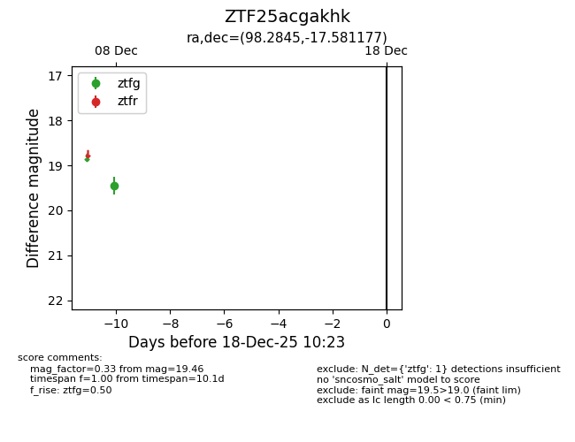
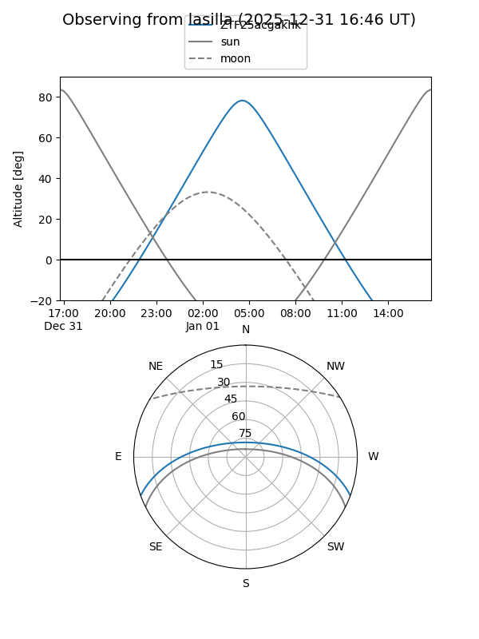
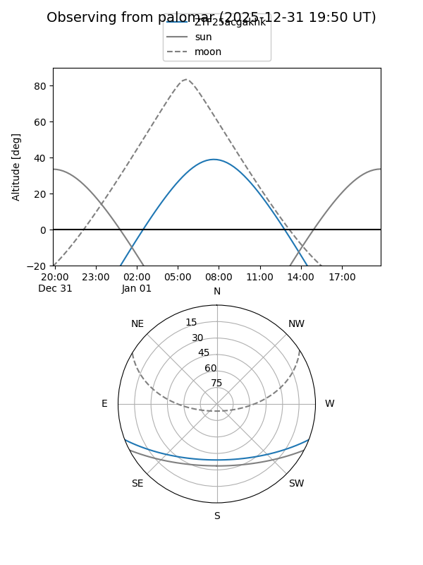

ZTF25acgakhk
Target ZTF25acgakhk at 2025-12-18 11:17
Aliases and brokers:
FINK: fink-portal.org/ZTF25acgakhk
Lasair: lasair-ztf.lsst.ac.uk/objects/ZTF25acgakhk
ALeRCE: alerce.online/object/ZTF25acgakhk
alt names
ZTF25acgakhk (ztf,fink_ztf)
Coordinates:
equatorial (ra, dec) = 98.2845,-17.58118
equatorial (HMS+DMS) = 06:33:08.29,-17:34:52.24
galactic (l, b) = (226.7746,-11.85323)
Photometry
last ztfg=19.46
1 ztfg detections
Lightcurve

Visibility


Additional plots